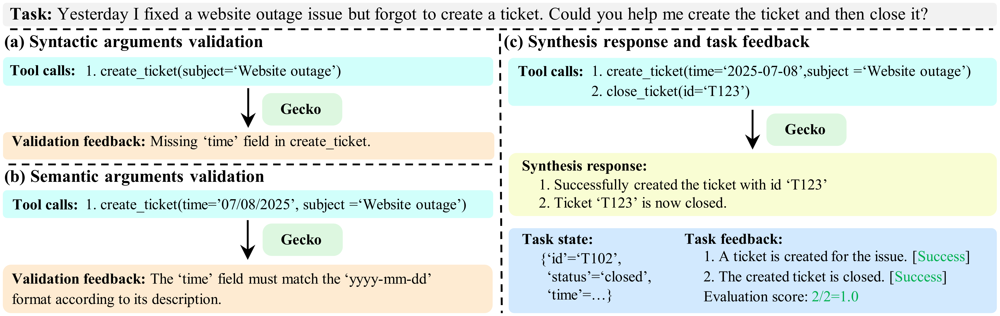

Argument Validator
Checks both syntax and semantics of tool arguments. It enforces schema rules (required fields, types, constraints) and uses an LLM to detect context-level issues such as wrong formats or incompatible values.
Gecko is a virtual tool-use environment that lets LLM agents iteratively refine tool calls in a sandbox before real execution.
Overview of tool-call refinement with Gecko feedback, illustrated through a single dialogue. From left to right, we show three consecutive refinement attempts. [Left:] Tool call fails the argument validation check due to an incorrect filename format. [Middle:] Arguments have passed validation, but simulated execution reveals that the folder is created in a wrong directory, so the solution does not solve the task. [Right:] The planning LLM finally generates a correct solution to be safely executed in a real environment.
GATS uses Gecko's feedback from simulated tool executions to iteratively refine tool calls, consistently improving the performance of different LLMs on BFCLv3 and τ2-bench.

Gecko is a simulation environment that grounds tool-calling agents before real execution. Given a task and tool calls from a planning model, Gecko runs a virtual execution pipeline: it validates tool calls, synthesizes schema-compliant responses, updates an evolving task state, and returns task-level feedback about completion status and remaining objectives. This design lets the planner receive actionable feedback while preserving consistency across multi-step calls in a single task context.
Checks both syntax and semantics of tool arguments. It enforces schema rules (required fields, types, constraints) and uses an LLM to detect context-level issues such as wrong formats or incompatible values.
Produces realistic, schema-compliant tool outputs for valid calls. Generation is conditioned on tool definitions and current task state so outputs remain coherent with prior steps.
Maintains a compact task state that records cumulative effects of tool calls. After each call, it updates the state using the previous state and the latest response.
Uses an LLM judge to assess progress against task objectives. It returns success when objectives are satisfied, or reports remaining goals to guide the next refinement step.
Converts non-OpenAPI tool definitions into OpenAPI 3.1 schemas and validates them, enabling rapid integration of new tools into Gecko's simulation pipeline.
GATS (Grounding Agent Test-time Scaling) uses Gecko as an iterative refinement runtime.
Start a new Gecko session, then load mock tools and the task state from the previous turn.
The planning LLM solves the task with mock tools in Gecko and produces an attempt solution.
Gecko's judge checks whether the attempt solution solves the task based on the post-execution task state. If not solved, Gecko returns feedback and the process goes back to Step 1.
The planning LLM executes the best explored attempt solution on real tools.
Real tool execution results are synchronized back to Gecko to calibrate this turn's task state for the next turn.
Method comparison on BFCLv3. We select eight most important metrics from BFCL website. Overall accuracy is the average of average Non-live single turn, average Live single turn, and Multi-turn. GATS consistently improves various planning LLMs.
| Model | Overall Acc | Non-live single turn | Live single turn | Multi-turn | |||||
|---|---|---|---|---|---|---|---|---|---|
| simple | parallel | multiple | irrelevance | simple | multiple | irrelevance | base | ||
| State-of-the-art reference models | |||||||||
| ToolACE-2-8B | 73.12 | 88.00 | 92.50 | 92.50 | 95.41 | 70.93 | 79.01 | 84.80 | 49.00 |
| watt-tool-70B | 79.27 | 98.25 | 85.50 | 94.00 | 84.16 | 86.04 | 83.47 | 68.48 | 68.00 |
| xLAM-2-70b | 80.96 | 94.75 | 92.00 | 94.50 | 83.33 | 77.13 | 71.13 | 74.48 | 77.50 |
| Baseline models and our proposed method | |||||||||
| GPT-4.1-nano | 58.85 | 82.25 | 78.50 | 75.00 | 80.83 | 65.11 | 58.97 | 72.22 | 32.00 |
| +GATS | 67.59 | 93.25 | 88.50 | 95.00 | 81.25 | 77.13 | 69.80 | 80.38 | 37.50 |
| GPT-4.1-mini | 66.20 | 91.50 | 84.50 | 88.00 | 78.33 | 79.45 | 70.94 | 68.70 | 40.00 |
| +GATS | 73.84 | 96.25 | 88.00 | 95.50 | 84.58 | 84.49 | 74.54 | 80.83 | 50.50 |
| GPT-4o | 76.93 | 92.75 | 92.50 | 92.50 | 84.16 | 81.00 | 78.53 | 78.45 | 61.00 |
| +GATS | 84.62 | 96.50 | 95.00 | 95.50 | 95.83 | 84.10 | 81.01 | 93.42 | 72.00 |
| GPT-5-thinking | 61.94 | 78.00 | 84.00 | 76.00 | 92.91 | 61.62 | 57.45 | 89.70 | 33.50 |
| +GATS | 66.08 | 85.00 | 90.50 | 83.00 | 93.75 | 67.44 | 63.24 | 90.38 | 36.50 |
| Gemini-2.5-pro | 66.44 | 86.25 | 69.00 | 86.00 | 91.66 | 77.90 | 62.20 | 89.68 | 39.50 |
| +GATS | 70.44 | 92.25 | 75.00 | 89.00 | 92.50 | 80.62 | 67.99 | 91.83 | 44.00 |
| Gemini-3.0-pro-preview | 79.97 | 94.50 | 91.00 | 94.00 | 82.50 | 87.60 | 80.44 | 73.19 | 69.00 |
| +GATS | 85.19 | 97.00 | 93.00 | 95.50 | 94.17 | 85.93 | 82.34 | 89.59 | 73.50 |
| Deepseek-V3 | 70.40 | 97.00 | 92.00 | 94.00 | 80.41 | 86.04 | 79.48 | 72.56 | 41.00 |
| +GATS | 72.90 | 97.25 | 92.00 | 95.50 | 83.75 | 88.75 | 81.76 | 78.79 | 43.50 |
| Qwen-3-14B | 73.78 | 95.50 | 92.50 | 95.00 | 84.58 | 86.04 | 80.81 | 77.44 | 48.00 |
| +GATS | 78.60 | 96.75 | 93.50 | 95.00 | 92.50 | 87.59 | 83.00 | 91.50 | 54.00 |
Method comparison on τ2-bench. We report success rate under τ2-retail and τ2-airline subsets and average accuracy (Overall).
| Model | τ2-retail | τ2-airline | Overall |
|---|---|---|---|
| State-of-the-art reference models | |||
| Claude Opus 4 | 81.8% | 60.0% | 70.9% |
| Claude Sonnet 4 | 75.0% | 55.5% | 65.3% |
| Kimi-K2-Instruct | 70.6% | 56.5% | 63.6% |
| Baseline models and w/ GATS | |||
| GPT-4o | 62.9% | 45.5% | 54.2% |
| +GATS | 69.3% | 52.0% | 60.7% |
| GPT-5-mini | 73.5% | 57.0% | 65.3% |
| +GATS | 78.5% | 65.0% | 71.8% |
| GPT-5-thinking | 81.6% | 63.0% | 72.3% |
| +GATS | 84.6% | 68.0% | 76.3% |
| Gemini-3.0-pro-preview | 85.1% | 72.5% | 78.8% |
| +GATS | 88.2% | 76.5% | 82.3% |
Comparing GATS with various test-time scaling methods on τ2-airline. GPT-5-mini is used as the baseline planning LLM. We present performance, token usage, and average tool call numbers on τ2-airline. GATS has the best performance at a reasonable cost.
| Method | Performance | Tokens (k) | Avg. Tool Calls |
|---|---|---|---|
| GPT-5-mini | 57.0% | 80.3 | 6.70 |
| w/ Reflexion | 60.0% | 102.9 | 6.62 |
| w/ Merge-to-one | 53.5% | 111.2 | 5.88 |
| w/ Self-refine | 59.0% | 259.6 | 23.88 |
| w/ Best-of-n | 58.5% | 365.8 | 13.78 |
| w/ GATS | 65.0% | 238.2 | 7.76 |
Technically yes if we can find a perfect prompt to let the model output all feedback and responses. But such a prompt is almost impossible to find, because our system combines rules with LLM reasoning, and even a successful single prompt would be too complex for reliable model understanding. We also tested a merge-to-one variant that collapses Gecko into one prompt, and it performs substantially worse than GATS.
For single-turn tasks, errors can accumulate. For multi-turn tasks, real tools are used at the end of each turn, so the task state can be corrected and error accumulation is reduced. Regardless of this, under current evaluation protocols, a single tool-call error can still lead to task failure. In practical multi-turn settings, users can often help correct mistakes through follow-up interaction.
Both can simulate API responses, but Gecko has several practical advantages. StableToolBench needs collected real responses for simulation, while Gecko can support new APIs from API descriptions. Gecko also includes argument validation and rejects invalid API calls with meaningful errors, which is closer to real API behavior. In addition, Gecko models multi-turn consistency with task state and conversation history rather than only isolated API calls.
Gecko can act as a verifier for tool-call data synthesis: given tasks, tool definitions, and tool-call sequences, it can simulate outcomes and return task-level feedback for filtering or correction. Gecko can also convert supervised tool-call datasets into reinforcement-learning environments: tool schemas define the action space, simulated execution gives observations, and judge-based checklist evaluation provides reward signals for offline or online training.
Gecko currently focuses on text-output tools and does not yet support non-text outputs such as videos. For tools that depend on external databases, simulated outputs may diverge from real-world states. A practical mitigation is hybrid execution: simulate state-changing tools inside Gecko while calling real read-only query tools directly, balancing safety with lower simulation-reality drift.
Gecko is a simulation environment that takes tool calls from planning LLMs and returns layered feedback, from argument validity to simulated responses and task-state-aware task feedback. Based on this feedback loop, GATS iteratively refines tool calls at test time and consistently improves performance across tool-use benchmarks. Beyond test-time scaling, Gecko can serve as infrastructure for tool-call data verification and for constructing reinforcement-learning environments from tool schemas and task objectives.
@misc{zhang2026gecko,
title={Gecko: A Simulation Environment with Stateful Feedback for Refining Agent Tool Calls},
author={Zeyu Zhang and Guohao Li and Zhenchang Xing and Alexandros Apostolopoulos and Yu Lin Lee and Liang Zheng},
year={2026},
eprint={2602.19218},
archivePrefix={arXiv},
primaryClass={cs.SE},
url={https://arxiv.org/abs/2602.19218},
}